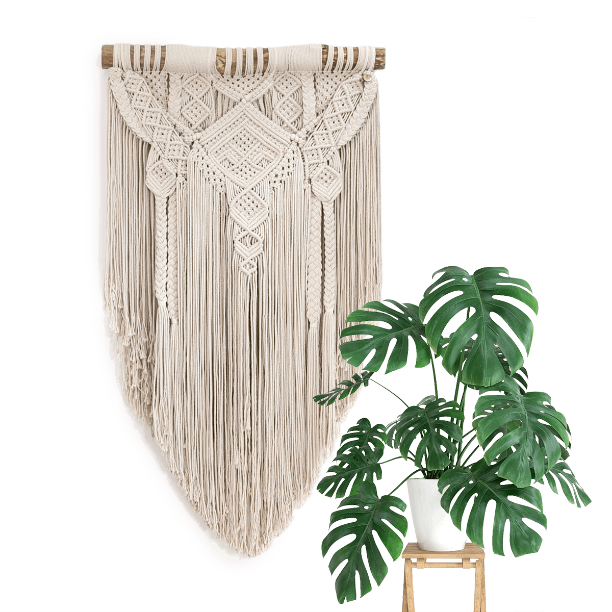

Tapiz de Pared Irene

Caracteristicas:
Este Tapiz es un producto artesanal hecho por manos que dejan todo su amor en cada pieza terminada.Cada obra nos recuerda de dónde venimos y traza los próximos caminos a recorrer, es memoria que se teje para luego ser contada.
Comprar AhoraTapiz de Pared Leonor

Caracteristicas:
La tecnica en macrame es una técnica de decoración artesanal, con una antigüedad que supera los 4.000 años, a partir de nudos (en realidad «nudo» es su significado en francés) en hilos de diferentes materiales como algodón, fibras naturales, seda, lino, yute, piola. El tejido es historia viva.
Comprar Ahora